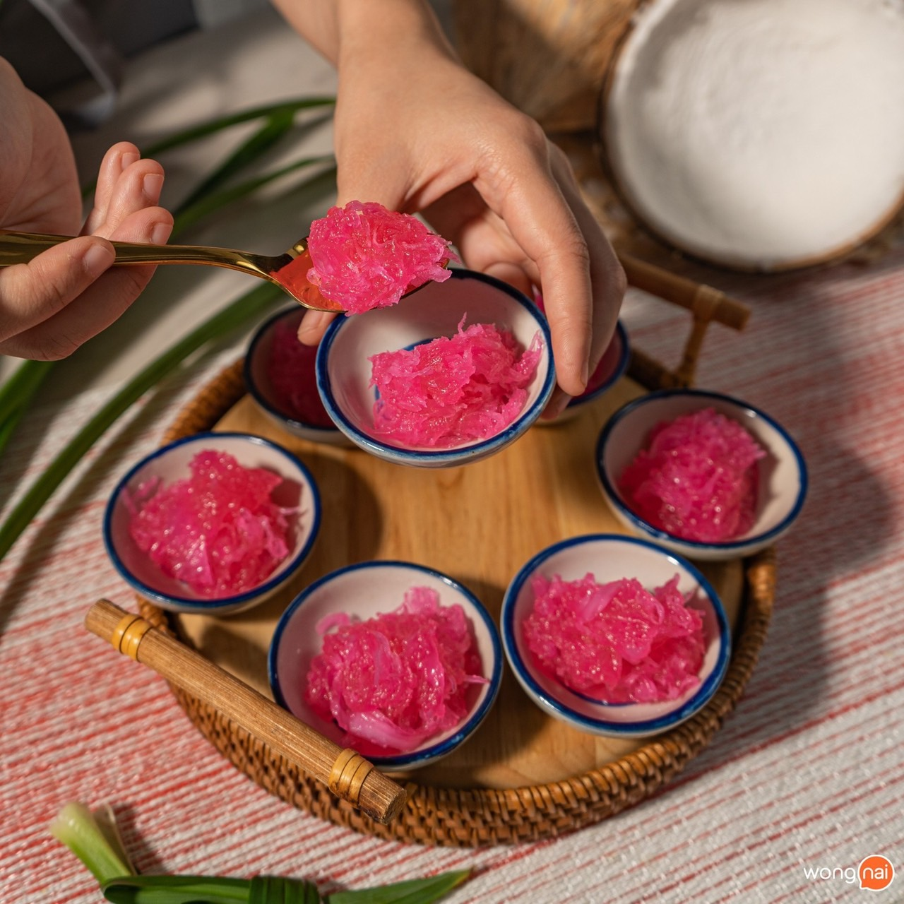

วัตถุดิบ
1.มะพร้าวขูดขาว 300 กรัม
2.น้ำตาลทราย 150 กรัม
3.ผงวุ้น 5 กรัม
4.น้ำลอยดอกมะลิ 150 มิลลิลิตร
5.สีผสมอาหารสีชมพู 1 ช้อนชา
วิธีทำ
1.ใส่ผงวุ้นและตั้งน้ำลอยดอกมะลิให้เดือด จากนั้นใส่ผงวุ้นลงในน้ำเดือดให้ละลาย
2.เมื่อผงวุ้นละลาย ใส่น้ำตาลทรายขาวลงไป ตามด้วยสีผสมอาหาร คนจนมีความหนืด
3.ใส่เนื้อมะพร้าวขูดขาวลงไป ผัดให้แห้งสนิท จากนั้นตักแบ่งใส่ถ้วยตะไล แค่นี้ก็พร้อมจัดเสิร์ฟ